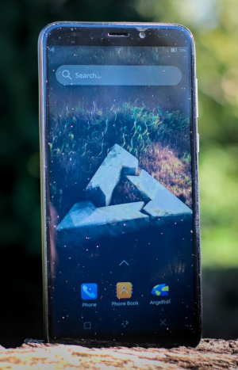

PINE64 PinePhone (pine64-pinephone)
|
 PinePhone running Plasma Mobile | |
| Manufacturer | PINE64 |
|---|---|
| Name | PinePhone |
| Codename | pine64-pinephone |
| Released | 2019 |
| Category | main |
| Original software | postmarketOS |
| Hardware | |
| Chipset | Allwinner A64 |
| CPU | 4x 1152 MHz Cortex-A53 |
| GPU | Mali-400 MP2 |
| Display | 720x1440 IPS |
| Storage | 16 GB / 32 GB |
| Memory | 2 GB / 3 GB |
| Architecture | aarch64 |
| Type | phone |
| Unixbench Whet/Dhry score | 1314.3 |
{kind=link}
| USB Networking |
Works
|
|---|---|
| Flashing |
Unavailable
|
| Touchscreen |
Works
|
| Display |
Works
|
| WiFi |
Works
|
| FDE |
Works
|
| Mainline |
Works
|
| Battery |
Works
|
| 3D Acceleration |
Works
|
| Audio |
Works
|
| Bluetooth |
Works
|
| Camera |
Works
|
| GPS |
Works
|
| Mobile data |
Works
|
| SMS |
Works
|
| Calls |
Works
|
| USB OTG |
Works
|
| NFC |
Unavailable
|
| Accelerometer |
Works
|
|---|---|
| Magnetometer |
Partial
|
| Ambient Light |
Works
|
| Proximity |
Unavailable
|
| Hall Effect |
Works
|
| Barometer |
Unavailable
|
| Power Sensor |
Unavailable
|
| Camera Flash | |
|---|---|
| Keyboard |
Works
|
| Touchpad |
Unavailable
|
| USB-A |
Unavailable
|
| HDMI/DP |
Partial
|
| Ir TX |
Unavailable
|
| Ir RX |
Unavailable
|
| Stylus | |
| Haptics | |
| Ethernet | |
| FOSS bootloader |
Works
|
{kind=link}
The PinePhone is a smartphone by PINE64. The postmarketOS vendor and device names are "pine64" and "pinephone" respectively. The back panel can be lifted off by pulling at the notch on the bottom-right corner of the phone. This exposes the battery, microSD and SIM slots, and DIP switches. It comes with a 3000mAh battery and uses the same form-factor as the Samsung Galaxy J7 (2015) for replacement.
The PinePhone will boot from a bootable microSD card if it is present otherwise it will fall back to booting from internal eMMC.
Contents
- 1 Contributors
- 2 Installation
- 3 Serial console
- 4 Hardware switches
- 5 Expansion port
- 6 Components
- 7 Troubleshooting
- 8 See also
Contributors
- MartijnBraam
- z3ntu
- bshah
- ollieparanoid
- (and many more!)
Installation
The recommended installation method is flashing a pre-built installer image to the SD card, as described in the Installation article.
Apparently for some users the touch screen does not work with the v22.12 installation image. If you are affected, please help tracking this down in postmarketos-ondev#60. You can work around this by using a v22.06 installer image and upgrading to the latest release. Or by building your own image with pmbootstrap.
As of writing, CPU idle states are not entered when booting from eMMC on both v22.12 and edge, leading to fast battery drain (pmaports#1946). A workaround is installing to SD card. Help with resolving this is appreciated, see e.g. discussions in pmaports!3931.
It is also possible to flash postmarketOS to the PinePhone with JumpDrive.
Serial console
The PinePhone has a serial port in the headphone connector, it's activated by the 6th contact on the DIP switch. If the switch is on then the headphone connector is in audio mode, if it's off then it's in UART mode.
The uart is 115200n8
The pinout for the serial connector on the headphone jack is:
- Tip: RX
- Ring: TX
- Sleeve: GND
The serial connection is 3.3V
You can also buy the debug cable from PINE64 Store. The store cable uses a 4 ring plug, as seen in the PDF, but a 3 ring plug works just as well.
{kind=link}
Hardware switches
There's a 6 contact DIP switch on the back of the phone underneath the back cover. The 6 switches are for enabling/disabling hardware components. The switch has tiny numbers 1-6 beneath the contacts, moving the contact up sets that contact on.
| # | Off | On |
|---|---|---|
| 1 | Modem disabled | Modem enabled |
| 2 | Wifi/BT disabled | Wifi/BT enabled |
| 3 | Microphone disabled | Microphone enabled |
| 4 | Rear camera disabled | Rear camera enabled |
| 5 | Front camera disabled | Front camera enabled |
| 6 | Headphone UART mode | Headphone audio mode |
Expansion port
There is a 2x3 grid of pogo pins on the back of the PinePhone for connecting a back cover with extra hardware like an extended battery case or a keyboard case. The pinout for this connector:
| Interrupt | SDA | SCL |
| 5V / VBUS | VBAT | GND |
The VBUS pin is powered by USB and is 5V. The second power pin is VBAT, which connects to the battery voltage. The I2C and interrupt lines have pull-ups on the phone side. The I2C lines are pulled up to 3V3 by the phone.
Components
| Component | Model | Driver |
|---|---|---|
| Touchscreen | Goodix GT917S | TOUCHSCREEN_GOODIX |
| Rear camera | OmniVision OV5640 | VIDEO_OV5640 |
| Camera flash | SGMICRO SGM3140 | LEDS_SGM3140 |
| Front camera | GalaxyCore GC2145 | Nope |
| LCD | Xingbangda XBD599 | CONFIG_DRM_PANEL_XINGBANGDA_XBD599 |
| WiFi | Realtek RTL8723CS | RTL8723CS |
| Bluetooth | Realtek RTL8723CS | BT_HCIUART_RTL |
| Modem | Quectel EC25-G | USB_NET_QMI_WWAN |
| GNSS/GPS | Quectel EC25-G | CONFIG_USB_SERIAL_OPTION |
| Magnetometer | ST LIS3MDL | IIO_ST_MAGN_3AXIS |
| Ambient light / Proximity | SensorTek STK3335 | STK3310 |
| Sixaxis | InvenSense MPU-6050 | INV_MPU6050_I2C |
| Vibration motor | Unknown model | INPUT_GPIO_VIBRA |
| Notification LED | LED0603RGB | LEDS_GPIO |
| Volume buttons | Buttons connected to the KEYADC | KEYBOARD_SUN4I_LRADC |
| Power button | X-Powers AXP803 | INPUT_AXP20X_PEK |
| Battery fuel gauge | X-Powers AXP803 | BATTERY_AXP20X |
Cameras
Currently only the rear camera (OV5640) has mainline Linux support, a driver for the front camera (GC2145) is being developed in the kernel fork for the phone development.
Megapixels is the defacto camera program for the PinePhone, and supports both the front and rear cameras, autofocus for the rear camera, and postprocessing options to make the images better.
Another alternative is to use media-ctl. The camera hardware pipeline is controlled with /dev/media1 and the result is on /dev/video3
Enable the rear camera and disable the front camera
pinephone:~# media-ctl -d /dev/media1 --links '"gc2145 4-003c":0->"sun6i-csi-bridge":0[0]'
pinephone:~# media-ctl -d /dev/media1 --links '"ov5640 4-004c":0->"sun6i-csi-bridge":0[1]'
Set image parameters on the rear camera entity
pinephone:~# media-ctl -d /dev/media1 --set-v4l2 '"ov5640 4-004c":0[fmt:UYVY8_2X8/1280x720]'
Verify connections
pinephone:~# media-ctl -d /dev/media1 -p
...
Device topology
- entity 1: sun6i-csi-bridge (2 pads, 3 links)
type V4L2 subdev subtype Unknown flags 0
device node name /dev/v4l-subdev0
pad0: Sink
[fmt:UYVY8_2X8/1280x720 field:none colorspace:srgb xfer:srgb ycbcr:601 quantization:full-range]
<- "gc2145 4-003c":0 []
<- "ov5640 4-004c":0 [ENABLED]
...
Take the picture
pinephone:~# ffmpeg -s 1280x720 -f video4linux2 -i /dev/video3 -vframes 1 selfie.jpg
{kind=link}
Camera Flash
Please note, that the driver for the sgm3140 is not yet included in the main kernel source and as such is not available for use yet without compiling the module yourself.
The camera flash consist out of a SG Micro SGM3140 "500mA Buck/Boost Charge Pump LED Driver" and a EHP-C04 LED. It supports Flash and Torch mode, the first being brighter but only for 200-300ms, when it switches to Torch mode automatically. Torch mode is lower brightness but can be turned on continuously.
Controlling the flash from user space is possible via sysfs and via v4l2:
# Torch on
$ echo 1 > /sys/class/leds/white\:flash/brightness
# Torch off
$ echo 0 > /sys/class/leds/white\:flash/brightness
# Activate flash
$ echo 1 > /sys/class/leds/white\:flash/flash_strobe
# Torch on
$ v4l2-ctl -d /dev/video1 -c led_mode=2
# Torch off
$ v4l2-ctl -d /dev/video1 -c led_mode=0
# Activate flash
$ v4l2-ctl -d /dev/video1 -c led_mode=1
$ v4l2-ctl -d /dev/video1 -c strobe=1
WiFi
The wifi uses the rtl8723cs driver and is functional. There is still an issue with the driver not reloading correctly when the SoC is put into suspend mode, this can be worked around by reloading the kernel module:
pinephone:~# sudo rmmod 8723cs
pinephone:~# sudo modprobe 8723cs
Bluetooth
Main article: Bluetooth.
The bluetooth connection is handled by the wifi chipset. It is functional but there is no integration in Plasma Mobile yet. To pair a bluetooth device start the bluetooth service and use bluetoothctl to connect.
pinephone:~# sudo service bluetooth start
pinephone:~# bluetoothctl
# scan on
[NEW] 00:11:22:33:44:55
# pair 00:11:22:33:44:55
To use bluetooth headphones with pulseaudio, the package pulseaudio-bluez is required.
Modem
Receiving and sending text messages works, The calls work but there are some issues left with the audio routing. Mobile data is functional. For information on audio routing and setting up the modem in Phosh, see the specific article.
To bring up mobile data run the following commands (for plasma mobile):
pinephone:~# sudo apk add ofonoctl
pinephone:~# ofonoctl wan --connect --append-dns
Or use only modemmanager which integrates better with Phosh.
pinephone:~# sudo mmcli -m 0 --create-bearer='apn=APN.NAME,user=USERNAME,password=PASSWORD,allowed-auth=chap,allow-roaming=no'
pinephone:~# sudo nmcli c add type gsm ifname cdc-wdm0 con-name OPERATOR-NAME apn APN.NAME user USERNAME password PASSWORD
# Check your connection
pinephone:~# nmcli c # check status of the connection named OPERATOR-NAME as above
pinephone:~# nmcli d # check status of cdc-wdm0
In order to connect to the serial console of the modem, you need a terminal application. One option is to use minicom.
# apk add minicom
Connect to the console by issuing:
# minicom -D /dev/ttyUSB2
The command AT returns OK:
AT
OK
The command ATI returns some version information from the modem:
ATI
Quectel
EG25
Revision: EG25GGBR07A07M2G
OK
The command AT+QDAI (Digital Audio Interface Configure) is used to configure the digital audio interface. AT+QDAI? returns the current configuration:
AT+QDAI?
+QDAI: 3,0,0,4,0,0,1,1
OK
Some more details on how to configure the modem is available here. The reference for the available commands is the EC25 & EC21 AT Commands Manual.
VoLTE
The EG25 modem in the PinePhone comes preloaded with VoLTE profiles for a few providers. The modem can handle VoLTE fully internally so nothing complicated is required on the postmarketOS side. PostmarketOS tries to set the VoLTE profile automatically. If that fails it can also be set manually:
# List of embedded VoLTE profiles
$ echo 'AT+QMBNCFG="list"' | atinout - /dev/EG25.AT -
+QMBNCFG: "List",0,1,1,"ROW_Generic_3GPP",0x0501081F,201901141
+QMBNCFG: "List",1,0,0,"VoLTE-ATT",0x0501033C,201909271
+QMBNCFG: "List",2,0,0,"hVoLTE-Verizon",0x05010141,201911251
+QMBNCFG: "List",3,0,0,"Sprint-VoLTE",0x05010205,201908141
+QMBNCFG: "List",4,0,0,"Commercial-TMO_VoLTE",0x05010505,201811231
+QMBNCFG: "List",5,0,0,"Telus-Commercial_VoLTE",0x05800C43,201912031
+QMBNCFG: "List",6,0,0,"Commercial-SBM",0x05011C18,201904021
+QMBNCFG: "List",7,0,0,"Commercial-DT",0x05011F1C,201905311
+QMBNCFG: "List",8,0,0,"Reliance_OpnMkt",0x05011B38,201910161
+QMBNCFG: "List",9,0,0,"TF_Germany_VoLTE",0x05010C1B,201909201
+QMBNCFG: "List",10,0,0,"TF_Spain_VoLTE",0x05010CFA,201909261
+QMBNCFG: "List",11,0,0,"Volte_OpenMkt-Commercial-CMCC",0x05012071,201904281
+QMBNCFG: "List",12,0,0,"OpenMkt-Commercial-CT",0x05011322,201911081
+QMBNCFG: "List",13,0,0,"OpenMkt-Commercial-CU",0x05011505,201807052
OK
# Select the profile most applicable to your provider, or use the Generic one if nothing matches
$ echo 'AT+QMBNCFG="select","ROW_Generic_3GPP"' | atinout - /dev/EG25.AT -
OK
# Enable calling over ip (VoLTE)
$ echo 'AT+QCFG="ims",1' | atinout - /dev/EG25.AT -
OK
# Reboot the modem to apply the settings
$ echo 'AT+CFUN=1,1' | atinout - /dev/EG25.AT -
After this process VoLTE should be used when available. To check the status while in a call you can run the CLCC command:
$ echo 'AT+CLCC' | atinout - /dev/EG25.AT -
+CLCC: 1,1,0,1,0,"",128
+CLCC: 2,1,0,1,0,"",128
OK
The "1" in the 4th column on the second CLCC row means it's currently calling with VoLTE, when it's "0" it's calling over the legacy phone network.
GNSS/GPS
The Quectel EG25-G modem has a builtin GNSS receiver for GPS, GLONASS, Galileo and BeiDou. The default configuration on postmarketOS is to enable GPS and GLONASS as they work the best on the Quectel EG25-G when location services are needed.
When ModemManager is used with this modem, GeoClue will ask ModemManager to enable the GNSS receiver on demand. Only if a GeoClue client asks for a high accuracy position, GeoClue will make use of the GNSS receiver. In all other cases, GeoClue will use the WiFi/Cellular positioning together with Mozilla data.
You can use the where-am-i demo of GeoClue to play around with the GNSS receiver.
mmcli --help-location provides also a set of commands which allow you to manually enable/disable the GNSS receiver or print your location.
Sensors
All sensors work and are accessible as Industrial I/O (iio) devices in Linux. To query the data you can cat the files in `/sys/bus/iio/` to make the kernel module query the sensors
pinephone:~# cat /sys/bus/iio/devices/iio\:device0/name
mpu6050
pinephone:~# cat /sys/bus/iio/devices/iio\:device0/in_accel_z_raw
-17594
pinephone:~# echo "Verified gravity still exists"
RGB Led
# Activate LED
echo 1 > /sys/class/leds/$COLOR/brightness
# Deactivate LED
echo 0 > /sys/class/leds/$COLOR/brightness
You may turn on and off the blue led by issuing:
# echo 1 >/sys/devices/platform/leds/leds/pinephone\:blue\:user/brightness
# echo 0 >/sys/devices/platform/leds/leds/pinephone\:blue\:user/brightness
Make sure you run these commands as root (sudo -i). For user,
echo 1 | sudo tee /sys/devices/platform/leds/leds/pinephone\:blue\:user/brightness works but
sudo echo 1 >/sys/devices/platform/leds/leds/pinephone\:blue\:user/brightness won't work.
Audio
Speakers
Sound output should work after unmuting AIF1 Slot 0 digital
Start by making sure alsa-utils are installed:
$ sudo apk add alsa-utils
You may use amixer, or alsamixer to unmute the required channels, and to control the volume:
Amixer:
$ amixer scontents
$ amixer sset Master unmute
Alsamixer (use terminal keyboard input to use up/down/left/right keys, to set volume and select devices):
$ alsamixer -V all
Test the sound output by issuing:
$ speaker-test -c3
USB Host (OTG)
For hardware revisions v1.0 and v1.1, USB OTG is broken and require soldering skills.
Since revision v1.2, USB OTG should works fine.
RAM
Changing the Clock Frequency
| Only change the RAM clock frequency if you know what you are doing. Otherwise you will probably break your installation and need to reinstall postmarketOS! |
postmarketOS runs with a RAM clock of 528 MHz to be most compatible with all PinePhones. Some PinePhones support higher RAM clock frequencies, and if you know what you are doing you can change it by replacing 528 with 552 and even 624.
# update-u-boot -r 528
Find the frequency your PinePhone is currently running at in /proc/device-tree/memory/ram_freq.
Details in pmaports!1998. Author of the patches BobbyTheBuilder also made a side-by-side video.
eMMC
Increasing eMMC speed (Vccq mod)
| WARNING: Neither PINE64 nor postmarketOS takes any responsibility for any modification the user applies. The hardware modification is not supported on all eMMCs - specific eMMCs won't work anymore after doing the hardware mod. The user is obliged to check if they are using a compatible eMMC before applying the hardware mod. The modification requires an expert level of soldering due to the sizes of the involved parts. |
On PinePhone hardware revisions 1.0 to 1.2b, the eMMC speed is limited by the eMMC power supply voltage. A hardware modification can be performed to increase the eMMC read/write speed.
Here are the read speed improvement we have measured (your results may vary):
- PinePhone 1.2 pmOS CE (convergence package) with 32GB SanDisk eMMC: before 55MB/s, after 125MB/s
- PinePhone 1.0 Braveheart edition with 16GB Kimtigo eMMC: before: 80MB/s, after 110MB/s
You can measure the read speed of your eMMC (or microSD) by using hdparm, consider only the buffered disk reads result.
$ sudo apk add hdparm
$ sudo hdparm -tT /dev/mmcblk2
The PinePhone eMMC read speed (~50-80MB/s) is limited from the DDR52 timing used, while both the eMMC and A64 SoC support HS200 and HS400 speeds.
Every eMMC card has two power supplies:
- Vcc powering the NAND storage inside the eMMC
- Vccq powering the eMMC micro-controller and the MMC bus
You can use eMMC cards in High Speed mode (HS200/HS400) only by powering Vccq at 1.8V or 1.2V, in the PinePhone (1.0 to 1.2b) Vccq is powered at 3.3V.
The PinePhone mainboard can be modified to switch Vccq from 3.3V to 1.8V, making possible to use HS200 and HS400 modes.
Hardware modification steps
| This modification involves desoldering and soldering components on the PinePhone mainboard, do this only if you know what you are doing. We are not responsible for any damage. |
| After performing this modification you won't be able to boot from eMMC any Linux image that is missing the proper Device Tree Overlay, this limitation does not apply to the microSD slot. |
- Disassemble the PinePhone and remove the mainboard from the phone
- Remove the metallic RF shield from the mainboard side with the A64 SoC visible at the center.
- Locate R615 and R614 footprints with the help of the component placement drawing for your PP revision.
The R615 resistor is above the eMMC card, and the R614 footprint should be right above it.
{kind=link}
- Desolder R615 0 ohm resistor and solder it to R614, or bridge R614 with solder.
- Put back the metallic RF shield paying attention to the alignment
- Reassemble the PinePhone
- Reinstall PostmarketOS to the eMMC selecting the
device-pine64-pinephone-vccq-modas package to be installed duringpmbootstrap init
This configuration is persistent to kernel and U-Boot upgrades, but the package has to be installed again when reinstalling the system to eMMC.
If you boot your modified PinePhone without installing device-pine64-pinephone-vccq-mod first, your phone will freeze during boot, this is expected since the stock kernel Device Tree no longer corresponds to your PinePhone hardware (Vccq is now 1.8V instead of 3.3V).
You can recover a not booting eMMC installation by manually copying the device-pine64-pinephone-vccq-mod files, for example after installing the package on a microSD installation, with the help of Jumpdrive.
You can check the current eMMC timing mode and clock with:
# cat /sys/kernel/debug/mmc2/ios
Notes
In theory a PinePhone with Vccq mod could boot an unmodified image (without DT change) from eMMC, albeit in DDR52 mode, but this isn't working as the eMMC is mounted read-only during boot. This situation can be investigated further.
The device-pine64-pinephone-vccq-mod package loads a Device Tree Overlay that switches Vccq from DCDC1 reg (3.3V) to ELDO1 reg (1.8V) and enables HS200 mode.
The A64 SoC has a limitation on the maximum eMMC clock speed, from the datasheet it supports max 150MHz at HS200 and max 100MHz at HS400.
HS400 mode is supported by hardware but it's not currently supported by the `sunxi-mmc` drivers in the Linux kernel.
- pmaports#1285 pine64-pinephone: Support for eMMC Vccq hardware mod
- pmaports!2665 pine64-pinephone: Add support for eMMC Vccq hardware mod
Magnetometer
The magnetometer cannot be used on the 1.2b revision PinePhone which switched from the LIS3MDL used in older revisions to the AF8133J. The driver is present in the kernel but the device tree does not define it. See pmaports#1945 for more details.
Troubleshooting
Modem's SMS cache is full and cannot receive SMS
ModemManager may not process all SMS, which can lead to the SMS cache getting full and not receiving future SMS. See pmaports#731 for instructions to clear the cache, and for details on how this is getting fixed.
Qt Based Browsers Not Loading Web Pages
Webkit sandbox is broken in the current build. In order to be able to use Qt based browsers it is necessary to create the file "/etc/profile.d/sandboxhack.sh" with the following contents:
#!/bin/sh
export QTWEBENGINE_DISABLE_SANDBOX=1
This sets an environment variable that kills the webkit sandbox because that's broken in the current build. This should be fixed already for the chromium musl build but not yet for all qtwebkit based browsers. This is being worked on here and here.
If your PinePhone does not boot anymore with postmarketOS, first make sure that your battery is not (nearly) empty. Plug the charging cable, make sure it's completely turned off (i.e. no LED is glowing, screen is completely dark). If it is not completely off, then hold the power button until it is. Leave it in that state until the battery is charged for sure, then try again.
If that does not help it, plug a serial cable if you have one and look at the output. If you don't but have a suspicion of what it could be, you can try to replace the initramfs files and/or u-boot bootloader with the instructions below.
In any case, we try hard to make the phone not enter a state where it can't boot anymore after installing updates. If you see that happen and it's not related to battery being empty, please report in detail in pmaports#1618. Mention which postmarketOS version you run (edge, or which stable release), and in detail what happens. Some users already reported that the osk-sdl keyboard for unlocking encrypted installations didn't work for them anymore (though that might be battery related? we couldn't reproduce it so far). Attaching the files from your /boot partition and is also very useful to help narrowing this down.
Fix broken boot partition
If postmarketOS gets stuck early in the booting process, it might fail to load u-boot / the kernel / initramfs / initramfs-extra. The exact cause can be determined over serial (remember to toggle the headphone killswitch for that), if initramfs-extra is corrupt, it will look like this for example:
Extract /boot/initramfs-postmarketos-allwinner-extra gzip: unexpected end of file cpio: short read /init: line 233: parted: not found
Depending on the serial output, the solution is either to replace contents of the boot partition (as with the output above), or to replace u-boot (see further below).
You don't need a serial cable for either fix, the serial cable is only needed to figure out the exact cause.
Boot partition on eMMC
- Download the latest image from the same channel you are running (edge, v21.03, ...) (see above)
- Put it on your SD card
- Login via serial or SSH (user / 147147) (SSH works over USB too!)
- Replace contents of your boot partition:
$ sudo mount /dev/mmcblk2p1 /mnt
$ cd /boot
$ sudo cp -v -r * /mnt
'allwinner' -> '/mnt/allwinner'
'boot.scr' -> '/mnt/boot.scr'
'initramfs-postmarketos-allwinner' -> '/mnt/initramfs-postmarketos-allwinner'
'initramfs-postmarketos-allwinner-extra' -> '/mnt/initramfs-postmarketos-allwinner-extra'
'lost+found' -> '/mnt/lost+found'
'sun50i-a64-pinephone-1.1.dtb' -> '/mnt/sun50i-a64-pinephone-1.1.dtb'
'sun50i-a64-pinephone-1.2.dtb' -> '/mnt/sun50i-a64-pinephone-1.2.dtb'
'uImage-postmarketos-allwinner' -> '/mnt/uImage-postmarketos-allwinner'
'uInitrd-postmarketos-allwinner' -> '/mnt/uInitrd-postmarketos-allwinner'
'vmlinuz-postmarketos-allwinner' -> '/mnt/vmlinuz-postmarketos-allwinner'
$ sudo umount /mnt
$ sudo poweroff
Wait until it is powered off. Then remove the SD card and start your phone, your boot partition should be working again. Remember to switch the killswitch again if you want to use your audio jack for audio.
Boot partition on SD card
- Download the latest image from the same channel you are running (edge, v21.03, ...) (see above)
- Plug the SD card into your computer
$ unxz 20210317-0042-postmarketOS-edge-phosh-6-pine64-pinephone.img.xz
$ sudo modprobe loop
$ sudo losetup -f --show -P 20210317-0042-postmarketOS-edge-phosh-6-pine64-pinephone.img
/dev/loop0
$ sudo dd if=/dev/loop0p1 of=/dev/mmcblkNp1
$ sudo losetup -d /dev/loop0
Replace /dev/mmcblkNp1 with the first partition of your SD card (see lsblk).
Fix U-Boot
postmarketOS installed to eMMC
If postmarketOS is installed to the eMMC, put another postmarketOS image on an SD card and run from there:
$ sudo update-u-boot -d /dev/mmcblk2
postmarketOS installed to SD
If postmarketOS is installed to an SD card:
- Put it into the PinePhone or PC
- Download
u-boot-pinephone-*.apkfrom here (replace master with e.g. v21.03 depending on the release you are running) - Extract the apk and
ddthe u-boot file to the SD card (double-check you have the right device withlsblk)
$ mkdir /tmp/x
$ cd /tmp/x
$ wget https://mirror.postmarketos.org/postmarketos/master/aarch64/u-boot-pinephone-2021.01_git20201228-r2.apk
$ tar -xf u-boot-*.apk
$ sudo dd if=usr/share/u-boot/pine64-pinephone/u-boot-sunxi-with-spl-528.bin of=/dev/path-to-sd-card bs=1024 seek=8
Failed to create boot/xxx: No space left on device
A bug has been observed where too many initramfs's are created. To fix, run the following commands to delete and regenerate all initramfs's.
postmarketos:~# sudo rm /boot/initramfs*
postmarketos:~# sudo apk fix linux-postmarketos-allwinner
See also
- pmaports!308 Initial merge request (Don't be evil devkit)
- pmaports!583 Initial merge request (PinePhone)
- PinePhone v1.1 - Braveheart - schematics, changes and known issues on the PINE64 wiki
- pmaports#1554 Discussion of microphone hardware issues and possible workarounds
- PinePhone U-Boot Upgrade
- PINE64 wiki: PinePhone